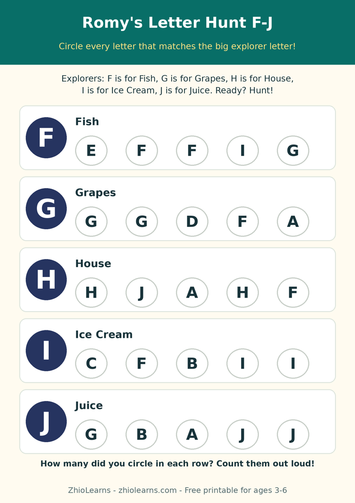

Teach Me the Letter: Why Kids Learn Faster When They Explain It Back
You point at the letter. You say its name. You make its sound, slowly and clearly. Your child nods — a serious, convincing nod — and you walk away fairly sure the lesson landed.
Maybe it did. But a nod is a quiet thing, and quiet things are hard to read. Children nod along to all sorts of explanations they have not yet understood, the way the rest of us nod through instructions for assembling furniture. There is a simple way to find out what actually stuck — and it makes the letter stick harder at the same time. Swap chairs. Let your child teach you.
Explaining is louder than listening
Listening is receiving. Explaining is reaching. To teach you a letter, your child has to go and fetch it themselves: what it looks like, where they saw it, what sound it makes. Then they have to put all of that into their own words, in their own order. Every step of that — the fetching, the sorting, the saying — is the learning happening out loud, where you can hear it.
That is why a letter a child has explained feels different from a letter a child has been told. The explained one has been handled. It has a story attached to it now: where it was hiding, and the moment they got to be the one who knew.
The two-minute version
It needs one letter, one hiding place, and a grown-up willing to play the student properly:
Hide it. A magnetic letter on the fridge. A sticky note on a chair leg. A letter card tucked into a shoe. Findable, not fiendish — this is a lesson, not an ambush.
Send the explorer. “There is a letter hiding in the kitchen. Romy needs it back.” Let the finding be the adventure it wants to be.
Hand over the chalk. When they return, ask — do not tell: “Where was it hiding? And what sound does it make? Teach me, so I don’t forget.”
Get it wrong, once. “So B says mmm?” Being corrected by a five-year-old, with full ceremony, is the sound of a letter moving in permanently.
That is the whole lesson. One letter a day is plenty. Tomorrow there will be a new hiding place, and the same very serious teacher will be available.
What to listen for
You are not marking homework here — you are taking a quiet reading of what has landed. If your child can tell you where the letter was and make its sound without prompting, it is theirs. If the sound wobbles, that is useful too: it tells you which letter deserves tomorrow’s hiding place, no test required and no feelings hurt.
And if the explanation wanders off into a long story about the fridge, the shoe, and what the cat was doing — let it. Retelling the hunt is part of the handling. The letter is in there, being carried around by the story, and carried things are remembered things.
A treasure-hunt alphabet, made for little teachers
Romy’s Alphabet Adventure: Let’s Explore the World of Letters was built on this exact instinct. For ages 4–6, it turns the alphabet into a treasure hunt: letters hide in the places curious children actually look, and every page hands you and your child something to spot, name, and talk about together. Read a page, then close the book and play it for real — hide the letter from the page somewhere in the room, and let your explorer find it and teach it back to you.
The free printable below pairs with it: a letter hunt for F to J, with rows to circle and a big explorer grid to search — five fresh letters for your little teacher to find, explain, and correct you about.
🖨️ Free printable: Romy’s Letter Hunt F–J

Circle the matching letters F to J, hunt through Romy’s big explorer grid, and draw something that starts with F. Two pages, ages 3–6, free, no sign-up needed to print it.
Download the free printable (PDF)📚 Today’s book
Find Romy’s Alphabet Adventure: Let’s Explore the World of Letters and Romy’s other books in our little shop — and read Romy’s Alphabet Picnic free in the Storytime section.
See Romy’s books →🌿 More from the Parent Corner
One word is noticing — “red!” Two words together is describing. Our previous article shows how pairing a colour with a shape teaches itself at breakfast.
Red and Round →